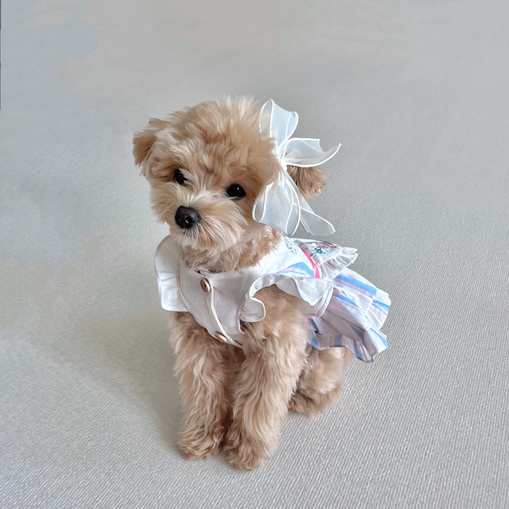
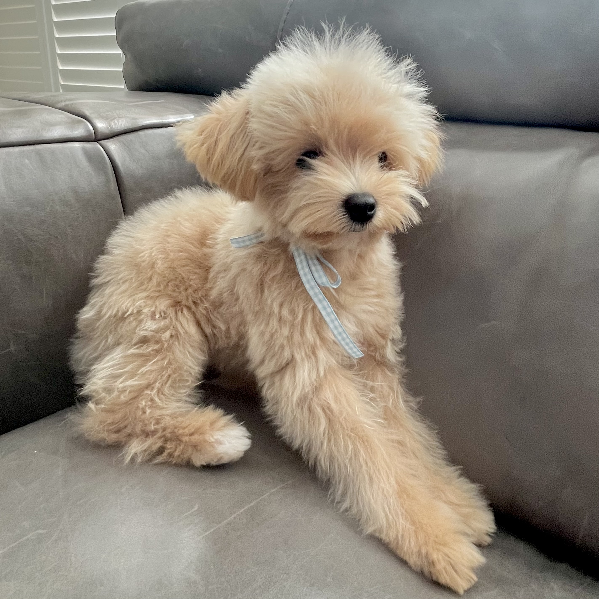
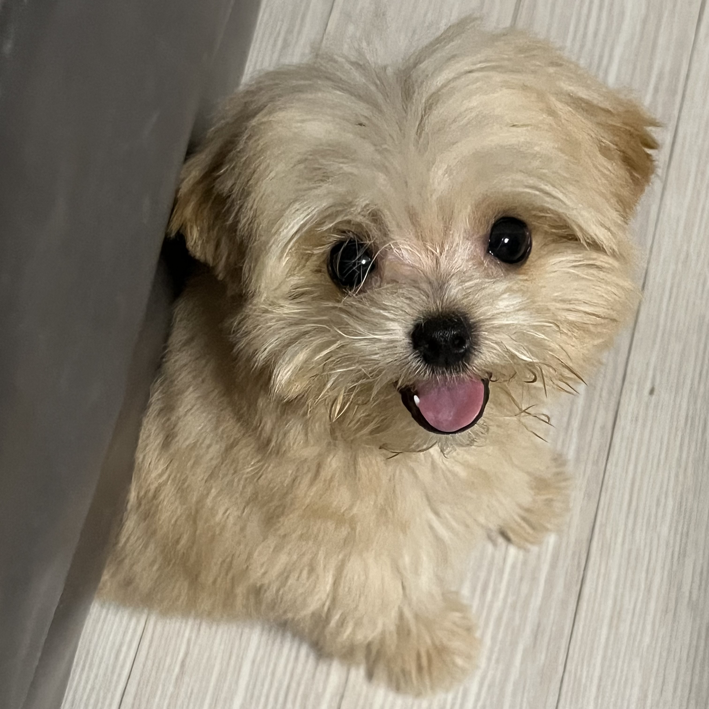
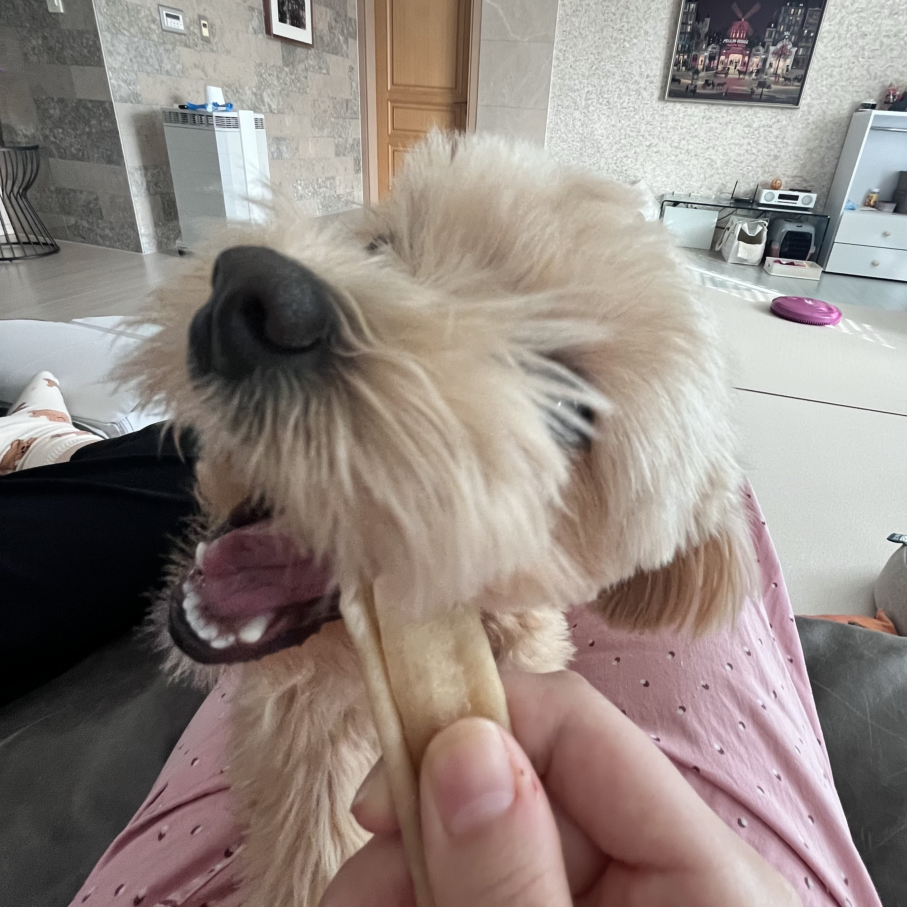
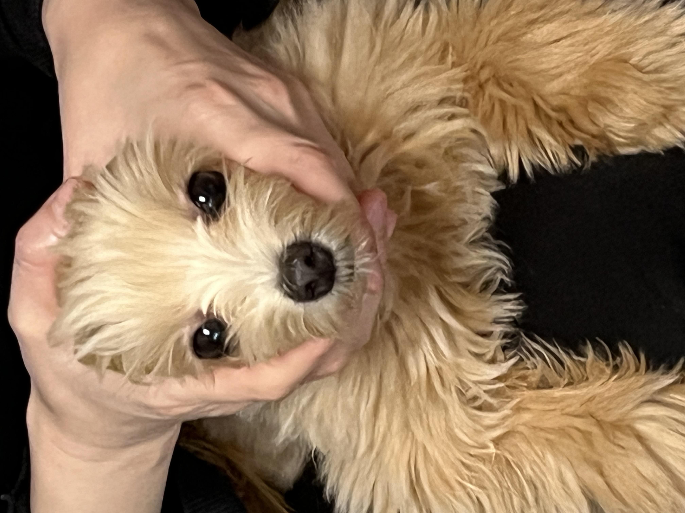
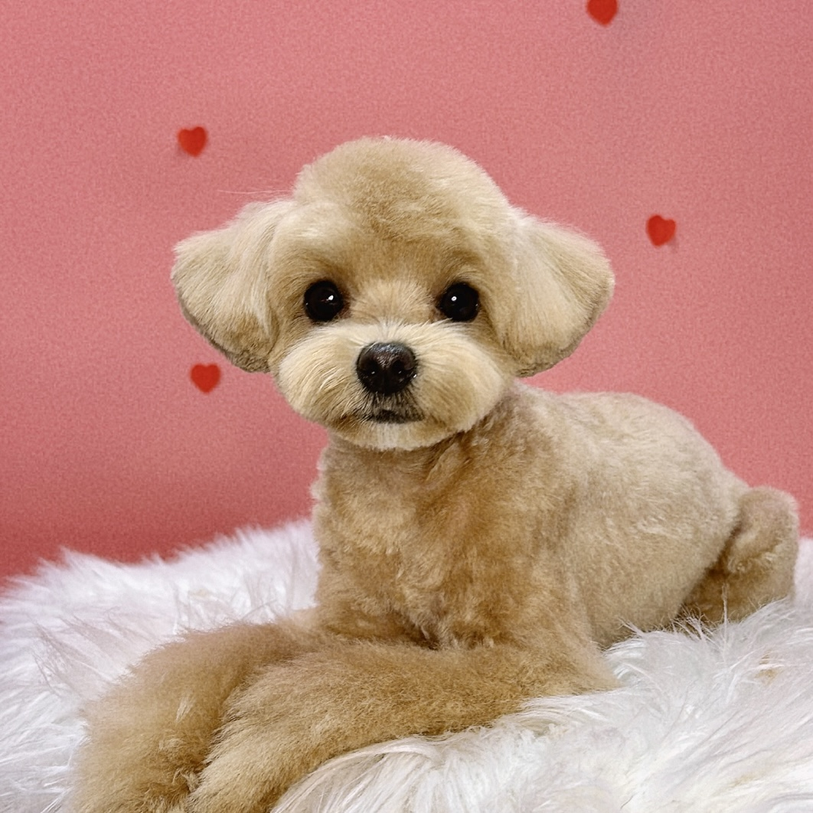

앵두는 저희 집 막내 딸 입니다. ~(-.-)~

앵두는 말티즈와 토이푸들 사이에서 태어난 Maltipoo로,
애교가 많고 사람을 매우 좋아하며, 장난기가 많은 아이입니다!
말티푸는 말티즈와 토이 푸들의 특징 모두 가지고 있습니다.
늘어진 귀를 가지고 있으며, 체형은 푸들을 닮아 목과 다리가 길거나 말티즈를 닮아 짧아집니다.
말티푸는 부모 중 누굴 닮냐에 따라 외모가 상당히 달라집니다.
때문에 형제도 전혀 다른 모양을 하고 있는 경우도 적지 않습니다.
말티즈는 비단처럼 부드러운 직모 털을 가지고, 토이 푸들은 빙글빙글한 곱슬 털이 특징입니다.
말티푸는 부모 중 한 종류를 닮으며 물려받기 때문에 직모 또는 빙글빙글한 털을 가진 말티푸도 있습니다.
말티푸의 색은 화이트, 베이지, 블랙, 브라운, 그레이, 실버, 살구 등 다양하게 존재합니다.
말티푸의 색이나 털의 질은 교배된 시점에서는 모르고, 태어난 뒤에 알 수 있습니다.
즉 말티푸 세계에서는 1마리만 존재하는 특별한 존재입니다!

머리카락 잘 물어뜯는다.

식탐이 많다.

서열이 높다.


이 웹사이트가 마음에 드신다면 좋아요 를 눌러주세요!